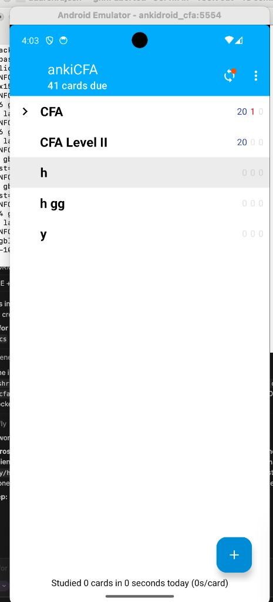
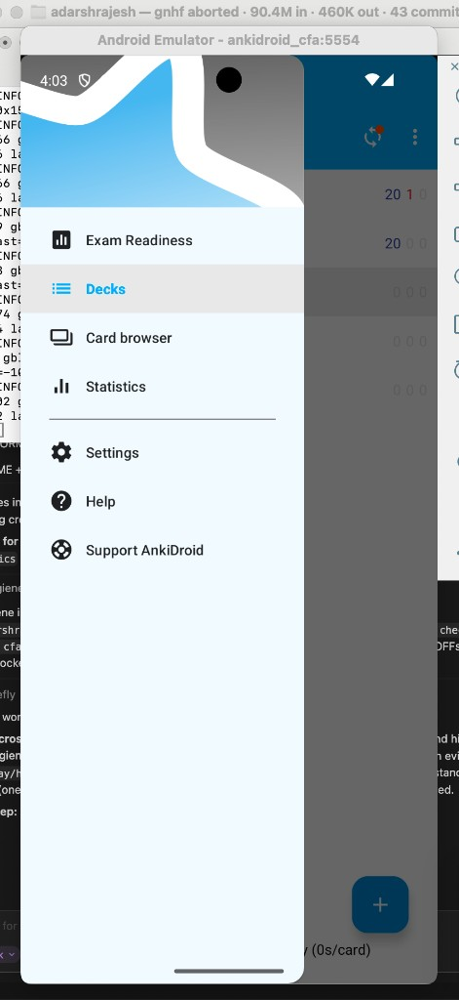
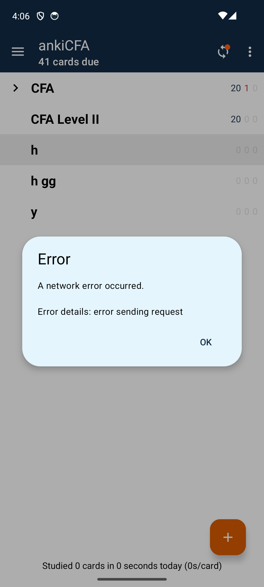

New-features UI plan · verified against the codebase
The Mastery Engine
A plan to turn ankiCFA from “Anki with a CFA tab” into a purpose-built CFA prep app whose center of gravity is a concept graph that decides what you study next — plus the ethics near-miss loop, a real on-device AI flow, and the specific desktop/phone bugs fixed. Every current-state claim below is checked against the actual source.
The wedge
The graph is a mastery engine that drives study, not a decorative progress bar. A node brightens only when a concept is reliable under exam-like conditions — never from clicks or streaks.
Design source: the subject project’s own CFA design system — docs/cfa/DESIGN-SYSTEM.md, cfa_style.TOKENS, AnkiDroid cfa.xml (navy #122B46 · warm accent #DA5C01 · IBM Plex Sans / Source Serif 4).
0
Where it actually is today
Truth-seeking first. The desktop CFA pages are genuinely CFA-native, but the phone is still ~95% stock Anki, and both AI features fail at the point of use. Three concrete, reproduced defects:
Phone · AI
AI Fill errors on tap
The “AI Fill” item exists in the ⋮ menu, but tapping it shows “AI unavailable — client_error… Card left unchanged.”
Verified: NoteEditorFragment.fillWithAi() → CfaAiClient.fill(); string cfa_ai_fill_unavailable. Root cause: no reachable AI proxy.
Phone · UX
Still “default Anki + a title”
Deck list, drawer (Decks / Card browser / Statistics / Settings / Help / Support AnkiDroid), ⋮ (add deck, backup, import/export). No CFA core. Ethics AI feedback absent.
Verified: nav drawer + one Exam Readiness activity added; everything else is upstream AnkiDroid.
Desktop · Nav
Readiness won’t open from the app bar
Only the macOS menu bar → CFA → Exam Readiness works. The in-app top bar does nothing.
Verified: cfa_chrome.py only re-skins toolbar CSS — it injects no clickable Readiness control, though the deck footnote claims “Readiness on the top bar”.

Now: stock deck list, only “ankiCFA” differs

Now: stock AnkiDroid drawer

After rebuild: navy shell only — still Anki structure
Directive taken literally: build the phone as if designing the optimal CFA prep app from scratch — do not preserve the Anki shell for its own sake. Delete/replace as much as needed; reuse only the parts that serve CFA prep (the Rust scheduler + collection/sync engine).
1
The design rules we’re holding
challenge
Optimal challenge (~70–85%)
Drills target the band where success is likely but not certain — the map biases toward concepts sitting outside that band.
autonomy
Bounded autonomy
The app recommends the next drill, but the learner can always pick a node/edge themselves. Guidance, not rails.
curiosity
Curiosity gap before rule
Ethics shows the near-miss and asks for a judgment before revealing the governing Standard.
competence
Competence feedback, not coins
Feedback is “this got more reliable under exam conditions”, never streaks, badges, or points.
diagnostic
Failure as diagnostic
A wrong answer is signal: it dims the node, names the mistake pattern, and can spawn a comparison drill.
2
Core loop — Ethics near-miss vignettes
exists on desktop · bring to phone + AI
Two almost-identical cases. Pick which is unethical, highlight the controlling phrase, get immediate feedback on both the label and the highlight — then AI adds semantic coaching on why your highlight was near-miss.
II(A) · Material Nonpublic InformationCuriosity gap: judge first, Standard revealed after.
Case A
An analyst overhears two strangers in an airport discussing an unannounced merger, independently corroborates the detail through public filings, and then trades.
Case B
An analyst is told the same merger detail by a friend on the target’s deal team, under an expectation of confidence, and then trades ahead of the announcement.
Which is unethical?Case ACase B ✓
Label ✓Correct — B breaches II(A): the info is material, nonpublic, and received in breach of a duty.
Highlight ≈Close. You caught the source, but the controlling phrase is the breach-of-duty (“under an expectation of confidence”), not merely “deal team”.
AI coaching (semantic, via proxy): Your recurring pattern is flagging who leaked over whether a duty was breached. In A, mosaic-theory corroboration makes trading permissible; in B the duty is the hinge. Next: 2 more mosaic-vs-breach pairs.
3
The Concept Map — the centerpiece
net-new
Each CFA concept is a node: dull when weak, bright when mastered. Edges are the boundaries students confuse; a weak edge can spawn a comparison drill. Tap a node or edge → a friendly, user-specific paragraph (why it’s dim, your mistake pattern, what would brighten it, the next drill) — never generic summary text.
Locked for v1: render all concept nodes at once with a server-precomputed, stable layout (identical every open). Density is managed by topic-color clustering + zoom/pan so the full graph stays readable — including on the phone.
This node is dim (23) because your recall is fine but it collapses under exam-style vignettes — you rarely apply put-call parity when the question is worded around a hedge, not a formula.
Your mistake pattern
Confuses the Derivatives ↔ Fixed Income boundary (the dashed edge): discounts cash flows correctly but mis-signs the forward.
What would brighten it
Not more flashcards — near-miss discrimination on 6 hedge-vs-speculate vignettes + a timed retention check in 3 days.
▶ Next drill: “Forward vs. Fixed-Income” comparison set (spawned from the weak edge)
~80% of this text is template-filled from performance data; only the italic “why” and the pattern sentence are LLM-polished.
Brightness must mean something
Brightness aggregates five exam-validity signals — not clicks or streaks:
Signal
Reads
Recall
Retrieval on the drilled card (memory)
Vignette application
Correct on reworded exam-style items (performance)
Near-miss discrimination
Distinguishes confusable pairs (edges)
Retention
Still correct after a delay, not just fresh
Speed
Answered within exam time budget
Reuse, don’t reinvent
The three existing honest scores already come from one shared Rust engine (ComputeCfaScores). The map is a new read-model over the same signals, and it must honor the existing give-up / abstain rule: a node stays grey (“not enough evidence”) rather than showing a falsely bright value.
Verified: desktop == mobile == Python parity on the scores; the map adds no new scoring truth, only a spatial view + next-action.
4
API — instant map, explanations that refine
One batched call on page load carries visibleNodes + visibleEdges + performance data. Templates cover ~80% so the map renders instantly; the LLM only polishes language and the specific miss explanations, streamed in the background.
flowchart TD
A["Concept Map opens"] --> B["ONE batched POST /cfa/concept-map { visibleNodes, visibleEdges, performance }"]
B --> C{"Server"}
C -->|"~80% templated"| D["Template renderer deterministic · instant"]
C -->|"language polish + specific misses"| E["LLM · GPT-4o via reachable proxy"]
D --> F["Map renders INSTANTLY brightness + edges + skeleton text"]
E -. "streams" .-> G["Explanations refine in background"]
F --> H["Tap node / edge → user-specific paragraph"]
G -. "upgrades in place" .-> H
Instant
First paint uses only templates + local data — zero network wait for the graph itself.
Cheap + safe
LLM is scoped to language + miss-explanation, keeping cost bounded and every claim traceable to a named source.
AI-off still works
With AI off, the templated 80% is the whole experience — the map and next-drill still function.
5
The three defects → fixes
A. Phone AI (both features): make the proxy reachable
Before
Tap AI Fill → AI unavailable — client_error…. Ethics has no AI feedback. The phone points at 10.0.2.2:27702 but nothing is listening.
Cause: proxy is a separate desktop process that’s usually not running; failure text is cryptic.
After
AI Fill drafts the empty side via a reachable proxy; ethics highlights get semantic AI coaching. Clear states: drafting → done (with source), or an honest, actionable “AI off — turn on in Settings”.
Bundle the proxy into the sync server the phone already logs into (one endpoint, one token).
Fix the error copy + add an in-app AI toggle/status.
B. Desktop Readiness: real app-bar control
Before
Top bar is only CSS-reskinned; no Readiness control is injected. Deck footnote says “Readiness on the top bar,” but only the macOS menu bar → CFA → Exam Readiness fires show_exam_readiness().
Verified in cfa_chrome.py (_toolbar_css only) + cfa_home.py (cfa:readiness bridge).
After
First-class app-bar tabs — Home · Study · Ethics · Readiness — each wired to the handler that already exists (show_exam_readiness()). The footnote becomes true.
Low-risk: handler + Home-page route already work; we only add the missing clickable entry point.
C. Phone shell: a CFA app, not Anki
Before
DeckPicker + stock drawer (Decks / Card browser / Statistics / Settings / Help / Support AnkiDroid). CFA is one bolt-on activity.
After
Purpose-built CFA home with a bottom nav: Today · Study · Map · Readiness. Anki’s deck/card-browser plumbing is hidden behind “Manage,” not the front door.
6
Phone rewrite — the optimal CFA app
Proposed phone home
4:06▮▮▮ ▾
ANKICFA · CFA LEVEL II
Today
38 days to exam · Readiness 41–58
▶ Start today’s session (18 min)
Weakest link
Derivatives ↔ Fixed Income — confused boundary
Ethics near-missAI
2 mosaic-vs-breach pairs
Concept map
3 nodes brightened this week
◉Today
▤Study
✦Map
▲Readiness
What changes
Replace DeckPicker as the launch surface with a CFA “Today” home (session CTA, weakest link, next drills).
Bottom nav (Today · Study · Map · Readiness) instead of a hamburger full of Anki tools.
Concept Map as a first-class tab — the same mastery engine as desktop.
Ethics loop on-device with AI semantic feedback (via the reachable proxy).
AI Fill in a CFA add-card flow with clear drafting/done/off states.
Keep the Rust scheduler, collection, and two-way sync — that’s the shared engine worth reusing.
Honest scope flag: replacing the launch surface + navigation is a large lift in AnkiDroid (Kotlin/Fragments). The plan phases it so the app is shippable at each step, and Anki’s tools stay reachable under “Manage” to avoid regressions.
7
Phased plan & workstreams
P0
Unblock & make AI real (days)
Desktop + Mobile + Backend
Bundle AI proxy into the sync server; fix phone error copy + AI toggle.
Open — brightness validity. How much retention/speed weight before a node may go bright? Needs a small calibration pass.
Resolved — map scale. v1 shows all concept nodes at once on a server-precomputed layout, clustered by topic color with zoom/pan. The one remaining modeling question is brightness-weight calibration (below).
8
Decisions — locked ✓
4 / 4 answered
You made the calls below; they’re now folded into the plan above. To revisit one, annotate its card and send it back.
Locked
1 · Phone AI hosting
Bundle the proxy into the sync server the phone already logs into — one endpoint/token, AI “just works” after login. (feeds P0)
Locked
2 · Phone rewrite scope
Full replace — new “Today” launch home + bottom nav; Anki tools move under “Manage”. (feeds P1)
Locked
3 · Concept-map layout
Server-precomputed, stable positions — instant and identical every open. (feeds P2)
Locked
4 · Map granularity (v1)
All concept nodes at once — clustered by topic color with zoom/pan to manage density. (feeds P2)
Prefer to free-type more? Annotate any element or select text on this page and send it — I’ll fold it into the plan.